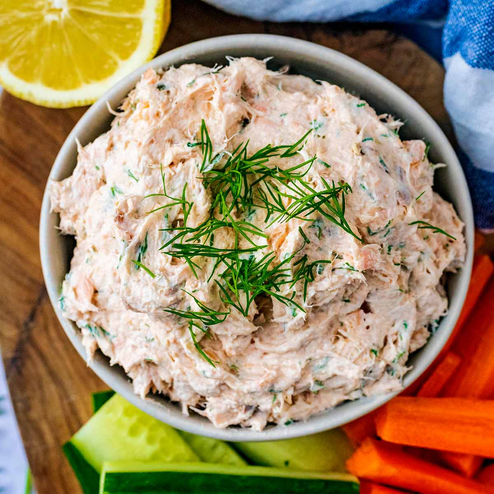

Salmon Pate

A delicious salmon pate recipe that you can make and enjoy with a slice of bread.
Get ready for this meal!
Ingredients
- 1/3 pound cooked salmon fillet
- 1/2 cup Greek yogurt
- 1/4 teaspoon salt
- A teaspoon dried dill weed
- 2 tablespoons butter, or to taste
- 4 slices French bread, or to taste
- 2 tablespoons prepared jalapeno pepper jelly, or to taste
Steps
- Blend salmon, Greek yogurt, salt, and dill weed together in a food processor
until creamy and smooth. Refrigerate pate until set, at least 1 hours.
- Butter each slice of bread and toast in the toaster oven, about 4 minutes. Spread
salmon pate over bread; spread pepper jelly on top.